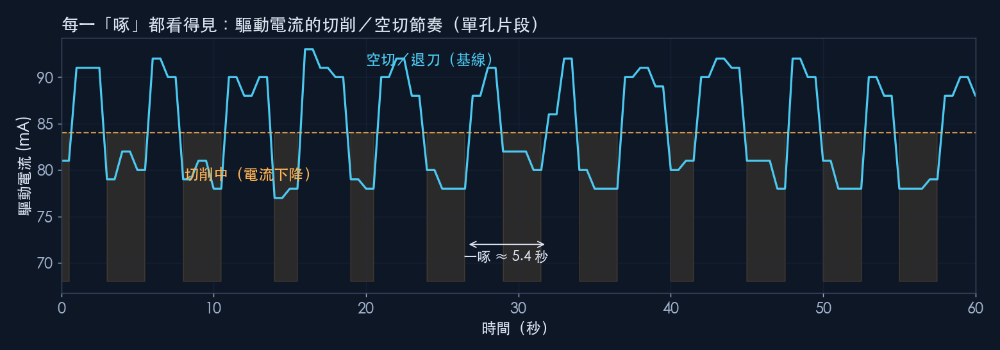
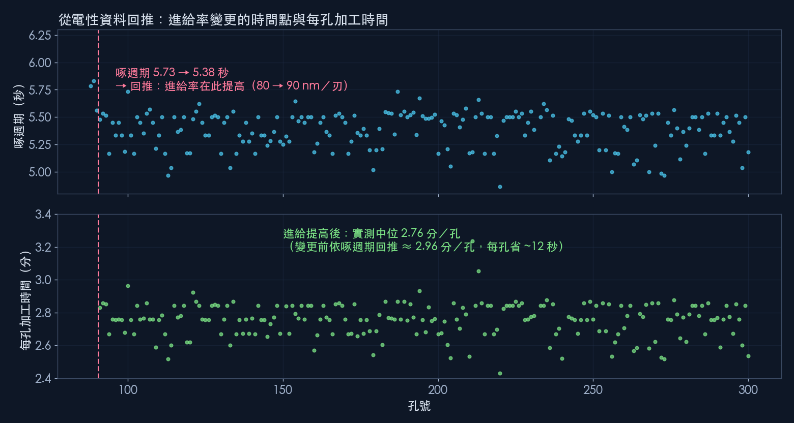
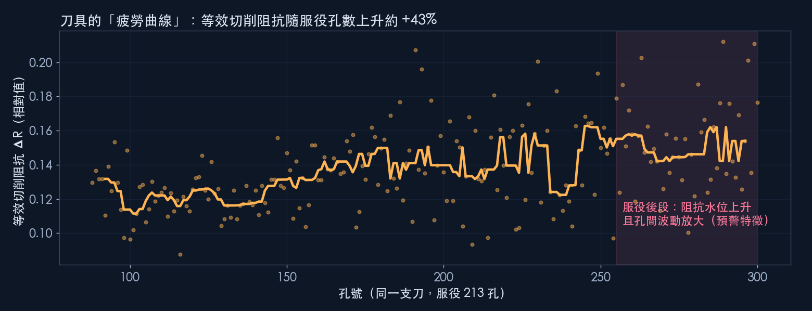
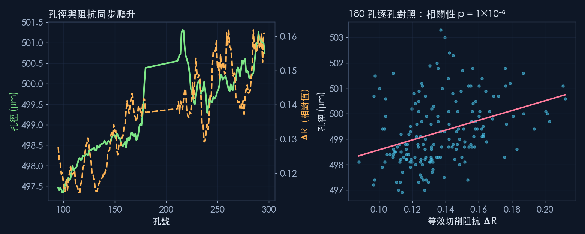

213 孔同一支刀全程追蹤
0 顆外加感測器
180 孔影像量測逐孔對照
p = 10⁻⁶阻抗 × 孔徑相關性
一、每一「啄」都看得見
微孔啄鑽（G83）的節奏，完整寫在驅動電流裡：刀尖接觸工件時電流下降、退刀時回到基線，形成乾淨的雙相位方波。一孔約 31 啄，每一啄都可以被自動辨識、計數、計時。

一個反直覺的細節：切削時電流是「下降」的——負載讓換能器的等效阻抗上升，電流隨之降低。這個方向性正是後面阻抗指標的物理基礎。
二、從電性資料回推：進給變更與每孔工時
啄週期是進給率的指紋。整批資料中，啄週期在第 90 孔之後從 5.73 秒整齊地降到 5.38 秒——電性資料自己標出了進給率提高（80 → 90 nm／刃）的確切時間點，與現場記錄一致。

同一套資料也直接給出每孔加工時間：進給提高後實測中位 2.76 分／孔，依啄週期回推，比變更前約省 12 秒／孔。對量產排程，這代表加工節拍不再依賴估算——每一孔都有實測數字。
三、刀具的「疲勞曲線」
我們從驅動器的功率與電流計算出「等效切削阻抗」：切削阻力越大，這個值越高。它在同一孔內自我校正，不受環境漂移影響，因此可以跨孔、跨日比較趨勢。

兩個訊號值得注意：阻抗水位隨服役孔數持續上升（刀具負載累積）；服役後段孔與孔之間的波動明顯放大——這是刀具狀態進入不穩定區的預警特徵。
四、阻抗訊號 × 孔品質：因果對上了
加工後，我們用影像量測儀對其中 180 孔做逐孔孔徑量測，與電性指標逐孔對照。三層證據指向同一件事：
- 水位對應：阻抗與孔徑逐孔相關（p = 1×10⁻⁶）；孔徑在板內以每孔 +0.018 µm 單調成長（p < 0.0001），與阻抗上升同向。
- 散布對應：服役後段孔徑的孔間散布放大一倍，與阻抗散布放大同步發生。
- 排除對照：電性訊號平穩的段落，孔徑也最小、最穩定。

這代表什麼｜孔徑要等加工完成、上量測儀才知道；等效切削阻抗在加工當下就有。兩者顯著相關，意味著品質劣化可以「在線上、在發生時」被攔截，而不是事後在量測室發現。
五、這套能力的價值
- 零改機成本：不加感測器、不改夾治具，訊號來自驅動器本身。
- 逐孔品質追溯：每一孔的加工節奏、工時、負載狀態都有紀錄，可回溯到任一孔。
- 換刀預警：阻抗「水位 + 波動」雙特徵，把換刀時機從固定孔數改為依實際刀況決定——避免提早換刀的浪費與過晚換刀的品質風險。
- 製程變更稽核：進給率等參數變動會留下電性指紋，自動可驗。
下一步，我們可以依貴司的料件與孔規格評估導入：以實際工件跑一輪同樣的「電性 × 量測」對照，標定適合的預警門檻。